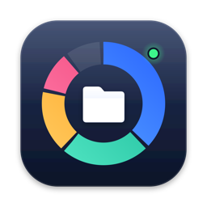

폴더 용량 분석과 개발 폴더 정리 · Folder sizes & developer cleanup for macOS
문의, 버그 제보, 기능 제안은 foncdev@gmail.com 으로 보내 주세요. 가능하면 macOS 버전과 앱 버전(DiskMgr → DiskMgr에 관하여)을 함께 적어 주세요.
사이드바의 + 또는 파일 → 폴더 추가(⌘O)로 폴더를 고릅니다. App Store 버전은 macOS 보안 정책(샌드박스)에 따라 사용자가 직접 고른 폴더만 읽습니다. 홈 폴더를 고르면 대부분의 폴더를 함께 볼 수 있습니다.
폴더를 옮겼거나 macOS 가 권한을 거둔 경우입니다. 사이드바에서 그 폴더를 우클릭 → 접근 다시 허용… 을 누르고 같은 폴더를 다시 고르세요.
다른 앱의 데이터, 메일, 메시지처럼 macOS 가 따로 보호하는 위치는 App Store 앱이 읽을 수 없어 0으로 계산됩니다.
시스템 설정 → 일반 → 로그인 항목 및 확장 프로그램 → 확장 프로그램(Finder)에서 DiskMgr 를 켜 주세요.
정리 추천과 중복 파일은 휴지통으로만 옮기므로 휴지통에서 되살릴 수 있습니다. 빌드 폴더 정리에서 "영구 삭제"를 고른 경우에는 되살릴 수 없지만, 빌드 폴더는 빌드 명령으로 다시 만들어집니다. 정리한 내역은 설정 → 정리 기록에서 볼 수 있습니다.
설정 → 삭제 불가 목록에 추가하거나, 폴더 탭에서 우클릭 → 삭제 불가 목록에 추가하세요. 프로젝트 폴더에 .diskmgr 파일을 두면 보호 규칙을 팀과 공유할 수도 있습니다.
폴더마다 보호할 경로, 목록에서 숨길 경로, 프로젝트만의 빌드 결과물, 용량 한도, 보관 기한을 적는 규칙 파일입니다. 폴더 탭에서 우클릭 → 폴더 규칙 편집… 으로 만들 수 있습니다. 지울 수 있는 것을 늘리는 규칙은 설정 → 폴더 규칙에서 승인해야 적용됩니다.
시스템 설정 → 알림 → DiskMgr 가 허용되어 있는지, DiskMgr 설정 → 정리 추천의 알림이 켜져 있는지 확인하세요.
For questions, bug reports, or feature requests, email foncdev@gmail.com. If possible, include your macOS version and the app version (DiskMgr → About DiskMgr).
Click + in the sidebar or choose File → Add Folder (⌘O). Following macOS security rules (App Sandbox), the App Store version can only read folders you choose. Choosing your home folder covers most locations.
The folder was moved or macOS revoked access. Right-click it in the sidebar → Allow Access Again… and choose the same folder.
Locations that macOS protects separately — other apps' data, Mail, Messages — can't be read by App Store apps, so they count as 0.
Turn on DiskMgr in System Settings → General → Login Items & Extensions → Extensions (Finder).
Cleanup Suggestions and Duplicate Files only move items to the Trash, so you can restore them from there. Items removed with "Delete Permanently" in Build Folder Cleanup can't be restored, but build folders are recreated by your build commands. Past cleanups are listed in Settings → Cleanup Log.
Add them in Settings → Protected List, or right-click a folder in the Folders tab → Add to Protected List. You can also share protection rules with your team using a .diskmgr file in the project folder.
A per-folder rule file for protected paths, paths to hide from lists, project-specific build outputs, size limits, and retention dates. Create one by right-clicking a folder in the Folders tab → Edit Folder Rules…. Rules that make more things deletable only apply after you approve them in Settings → Folder Rules.
Check that DiskMgr is allowed in System Settings → Notifications, and that notifications are turned on in DiskMgr Settings → Cleanup Suggestions.